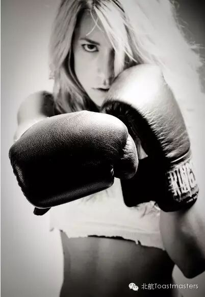
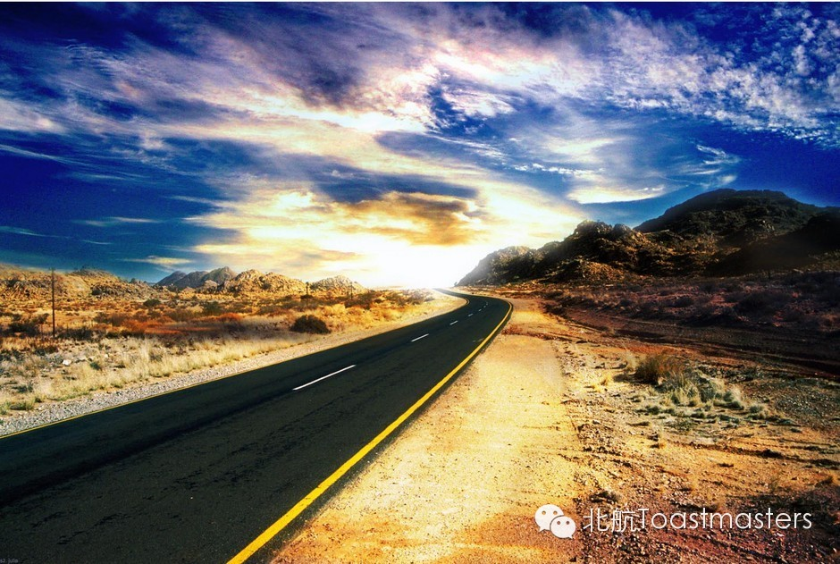
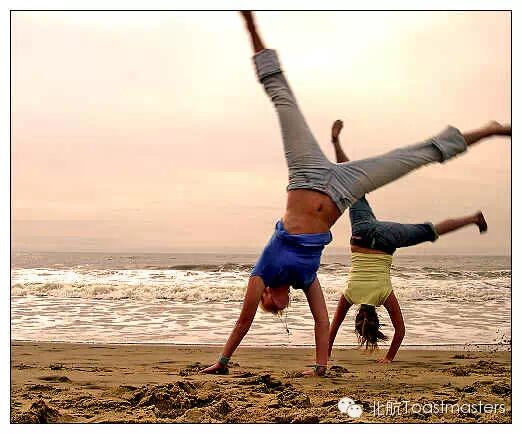
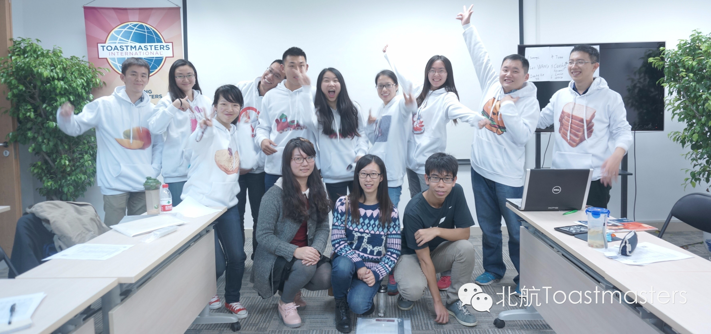

Fitness
Time: 19:30-21:30, Friday, April 17th
Venue: Room B208, New Main Building, Beihang University

Toastmaster: Grace
Table Topic Master: Elena
When Fitness calls you, follow him, though his ways are hard and steep. And when he speaks to you, believe in him, though his voice may shatter your dreams living in the castle made of cream and chocolate.
Aha, he is fitness, the one you have shown your crazy love to and the one who hurts you most by dragging you away from your favorite cream cake.
To keep fit, you must have tried everything and there must be some stories.
Why not come and join our table topic session on Friday night to share your stories? Right here waiting for you and your interesting experiences!
Prepared Speech
Meet the best of you in 30 days
CC2 Isabelle
What? Spending 30 days then I will meet the best of me? There must be a secret!
Hm…Join the meeting for one time and then I’ll get the secret…what a good deal!
There is “Three days to see” of Helen Keller; now we have “Thirty days to meet the best of you” from Isabelle. How can we be the best in such a short time? The answer is hidden in Isabelle’s speech. Come and see what the sweet girl will tell us!
Prepared Speech
Extend Your World
CC5 Sophie

Life is a journey; we are on the way with many travelers. Some people stop at a certain point during the trip and decide not to march forward any more while others are always on the road search for different sceneries to enjoy. They are “people in the comfort zone” and “people on the road”.
Sophie, an independent lady, is one of those “people on the road” for sure. She encourages us to be exposed to new experience and to embrace larger world of your own. Come to enjoy our president’s sharing on Friday night!
Prepared Speech
Research Your Body
CC10 Keven

How much do you know about yourself? “I know everything about me.” You said with a big smile on your face. But do you? Do you know the exact amount of energy your body needs every day? Do you have any idea about what are really inside you? Have you ever counted the times you sneeze in one day? And how about the yawn?
Now, are you sure that you have known everything about yourself? The fact is that we know much less than we thought we did. To help us understand ourselves better, the researcher Keven will bring his astonishing facts about our bodies. If you miss the speech, then you will probably lost a chance being aware of what you are!
Map
会议时间：每周五晚7:30到9:30
会议地点：新主楼B208
联系人：Keven 15810539853

About Beihang Toastmasters
北航自己的英语演讲俱乐部，
欢迎各位同学，来这里交朋友\练口语，更重要的是，
很多年前，《时代周刊》曾做过这样一个调查：
让人选择十项最害怕的事物，排名第二的是面对死亡， 高居榜首的你猜猜是什么？
答案是：Public Speaking 公众演讲
如何从容地面对几十上百人，控制紧张情绪？
如何组织大脑中的想法并合理地表达出来？
如何通过适当的肢体语言和眼神交流与听众互动？
如何通过语调的变化来感染听众？
以上种种都是我们要解决的问题。
在这里，你不必担心说得不好，有专业的Evaluator，
我们为你提供一个舞台，你所要做的，只是在Table Topic环节中举手上台。
我们有一整套的演讲方案，教你如何准备演讲。
关上电脑，走出实验室，冲出自己的心理舒适区，
May you——
Be the change you wish to see in the world!

Here is the two-dimension code of our WeChat Subscription.
欢迎关注微信公众平台：北航Toastmasters
https://mp.weixin.qq.com/s/rwsUM8QFjDH1c_WNx1i7UA
本页为抢救式本地归档，图文已永久保存。